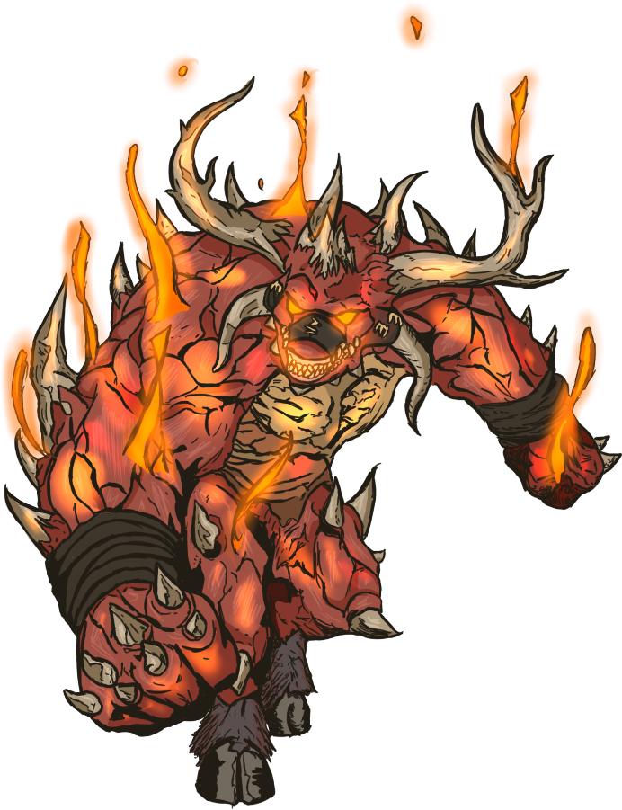
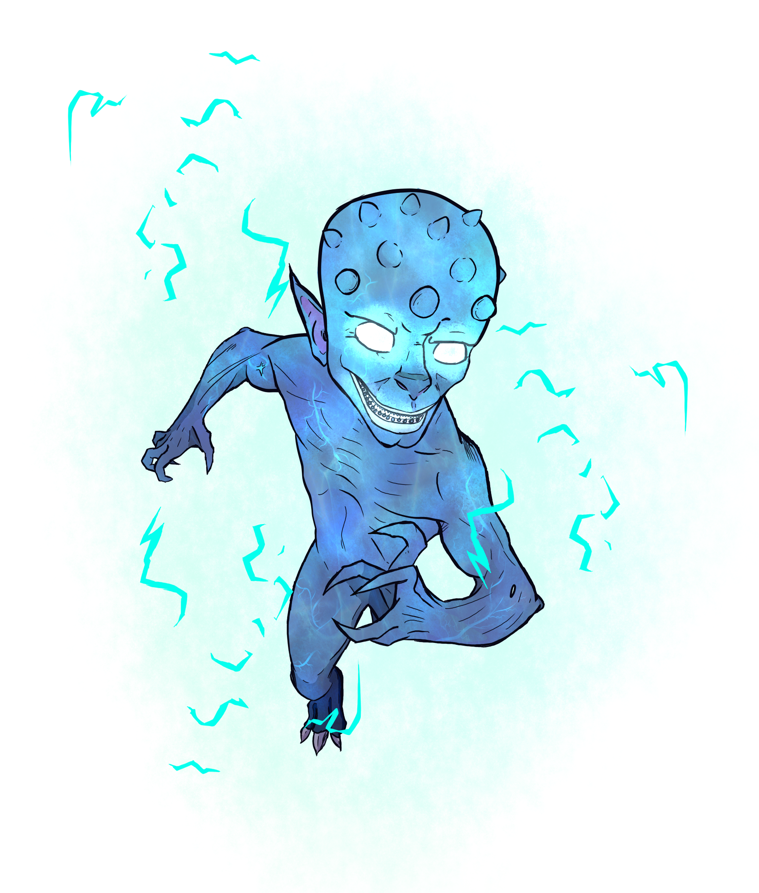
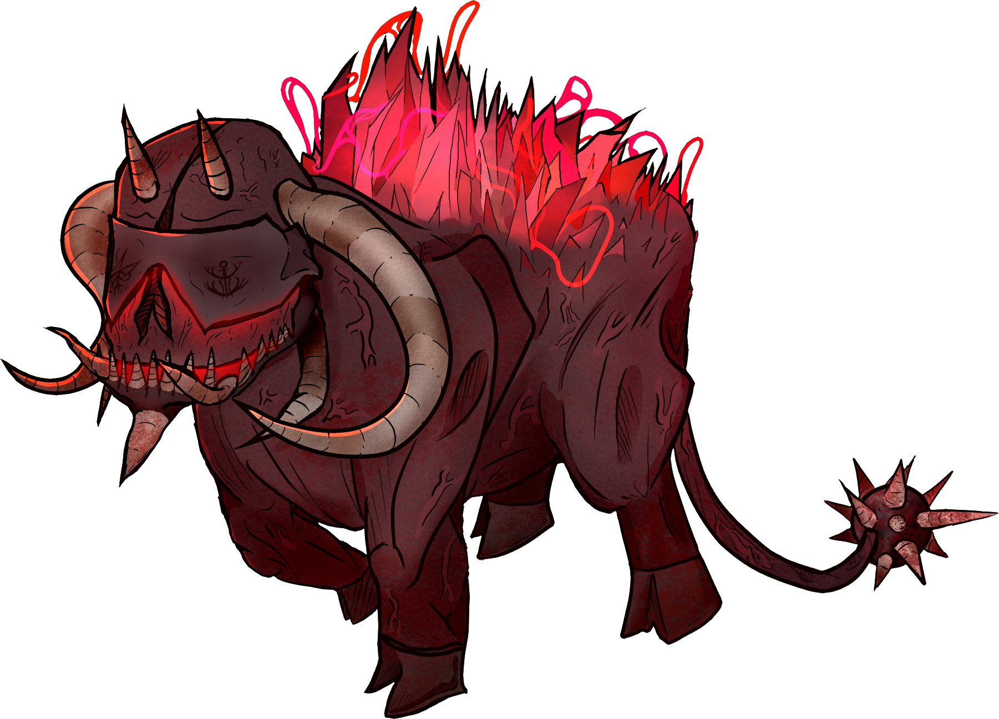
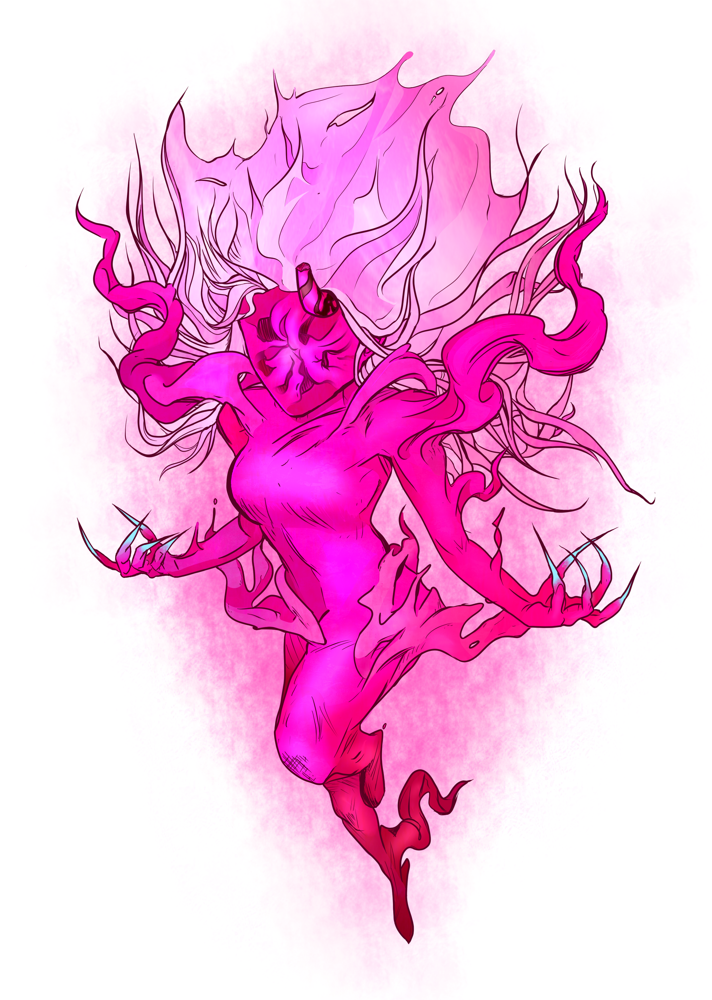
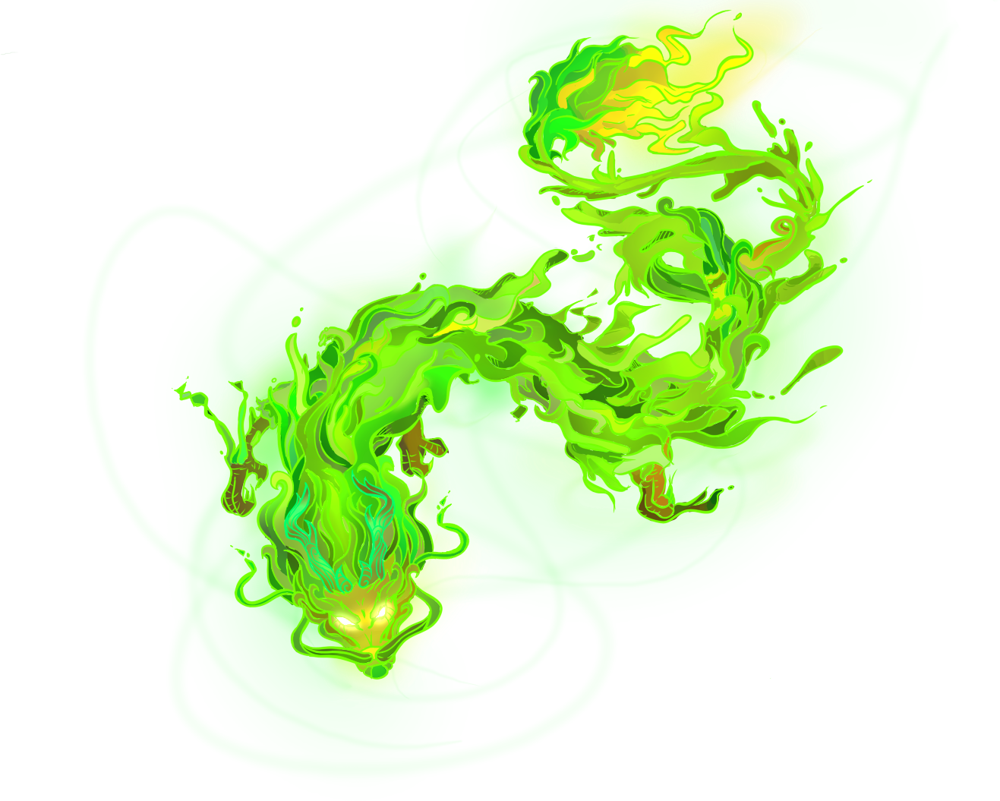

Descrição
Aparência

Essas manifestações voláteis são feitas puramente de medos religosos, normalmente envolvendo os inimigos da religião mais comum às terras que estes foram manifestados.
Suas aparências, poderes e comportamentos são tão variáveis que seria irresponsável escrever um relato preciso, quando nunca seria.
Normalmente, as entidades manifestadas apresentaram aspectos demoníacos e serão compostos totalmente de Energia Espiritual, uma composição etérea.
Comportamento

Eles são erráticos, imprevísiveis e podem caminhar entre espaços através de uma forma invísivel. Eles apenas se manifestam devidamente quando há a presença do medo que o manifestou em um ambiente. Normalmente não muito longe de seu lugar de origem.
Eles não costumam fugir ou recuar, raramente raciocinando. Mas, ainda assim, existe um senso performático implacado na natureza de cada uma dessas coisas. Por isso, estes costumam agir de acordo com os clichês de suas tipificações.
Eles são cruéis e nunca deve se deixar ser levado por qualquer proposta levantada por um Diabólico.
Como surgem?

Diabólicos se manifestam através de um terror de teor religioso numa comunidade. Personificando figuras as paranormais que causam medo dentro daquele contexto e antagonizando-as ao máximo.
Diabólicos não são necessariamente demoníacos, isso varia totalmenta da cultura na qual os manifestou.
Surto de 2028
Em 2028 na cidade de Lamentoso, foi registrado uma sequência de incidentes em toda a cidade. Manifestado pelo surto e aparição de diversos diabólicos em toda a região.
Investigações revelaram que um padre, ao seguir ordens misteriosas acabou espalhando algum tipo de amuleto selado por diversos pontos da cidade.
Após um período de tempo, 5 diabólicos diferentes passaram a atuar em diversos âmbitos em residências, campos e igrejas.
A situação foi controlada após quase um mês, mas resultou na morte de mais de 20 civis durante o surto. O autor do crime continua desaparecido.
Esta ocasião marcou o maior desastre da era moderna causado por Diabólicos.
Habilidades

A habilidade de um Diabólico depende totalmente da origem de sua manifestação. Por isso, não é possível fazer uma categorização ampla.
Ainda assim, é possível encarar o Surto de 2028 em Lamentoso como uma referência para o caso:
Diabólico Laranja: Manifestado pelo medo generalizado de demônios, sua manifestação
Recomendações

Ao lidar com um Legente é necessário ter conhecimento de seu conto para entender o escopo de suas habilidades. Deve também minimizar qualquer pânico geral ao redor da manifestação de medo, pois a entidade se alimenta disso.
Há 2 métodos de se enfrentar a menifestação. Através do espancamento de seu corpo original, o epicentro da manifestação. Ou o esquecimento e reformulamento de seu texto, se o contexto de medo sumir, o Legente também sumirá.
Além disso, é possível conter um Legente, ao vetar a divulgação de seu texto e isolá-lo num espaço confinado (normalmente o de sua aparição).